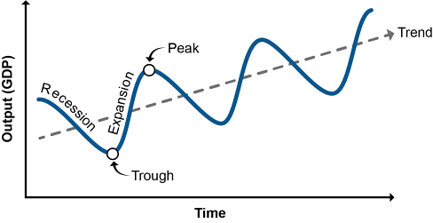
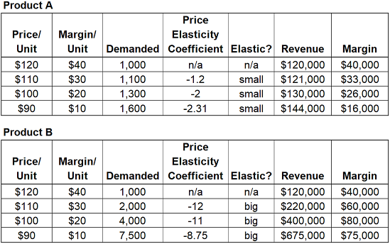
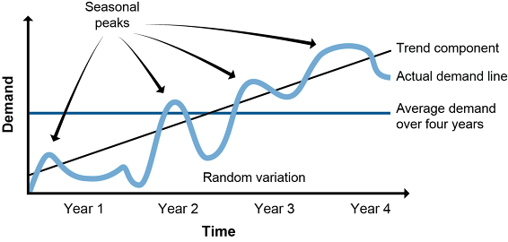

Demand patterns can be studied over the long, medium, and short term. Long-term patterns use macroeconomic and microeconomic analyses to understand aggregate market forces. Medium- to short-term patterns look at a product’s average demand over time as well as factors that can make actual demand higher or lower than that average.
Macroeconomics is the analysis of the behavior of the overall economy (supply and demand in aggregate) in response to variables such as employment, inflation, and monetary policy.
Economies go through cycles between periods of expansion and recession (or depression) in terms of gross domestic product (GDP). Near cycle peaks: low unemployment, production near full capacity. Near cycle troughs: higher unemployment, underutilized capacity.

Real GDP is the total value of all final goods and services produced within a given set of economic boundaries, adjusted for inflation or deflation. Weighted average price tracks overall price levels across the economy.
Macroeconomic data cannot be directly applied to a single industry or company—it relates to trends across all industries. Supply chain managers must translate aggregate signals into implications for their specific products and markets.
Inflation: a sustained increase in the general level of prices. Deflation: a sustained decrease. Central banks target a very small, steady rate of inflation to encourage spending over hoarding cash. Very high inflation or deflation both create economic uncertainty.
A recession is when real GDP declines for two consecutive quarters. If long-range aggregate supply decreases during a recession, it becomes a depression.
Beyond GDP: World Bank, IMF (International Monetary Fund), and WTO (World Trade Organization) data. Track metrics for multiple countries and economic regions, especially for global supply chain managers.
Supply chain managers use microeconomic models to determine when/where to expand output, what product mix to carry, and when to raise or lower prices.
As the price of a good or service increases, demand will decrease (all things being equal). This is the elasticity of demand. Additional reinforcing forces:
As the price of a good or service increases, supply will also increase. Higher prices give producers more incentive to produce. Related concepts:
On the micro scale, individual supply and demand tend toward an equilibrium price. Supply chain managers must monitor this and adjust when conditions change.

Supply chain managers can use elasticity to optimize price-volume trade-offs. When logistics costs are subtracted from margin-per-unit, the optimal price point may shift from what pure revenue analysis suggests.
Shows how sensitive suppliers are to price changes. Over the short term, suppliers tend to be inelastic (fixed capacity). Over the long term, supply is more elastic as capacity can be added or removed.
Focuses only on marginal utility and marginal cost — the utility and cost of the next unit. Used to decide when adding one more unit of output (or capacity) is still worth it. Example: if a truck costs €1,000 and can carry 10,000 kg, the average cost per kg is €0.10; but if you only need 5,000 kg, the marginal cost doubles — at that volume the truck is not adding full value.
Base demand is the long-term average demand for a product or service. Actual demand fluctuates above and below the base due to several factors:

Periodic upward, neutral, or downward shifts in demand lasting longer than one year. Economic cycles of recession and growth are prime examples. External demand drivers (economic cycles, population growth, major events or disasters) are sometimes used to quantify and model cyclical demand.
Promotions (discounts, advertising) and internal drivers (deals to gain favorable product placement) create demand spikes. These are knowable in advance and should be incorporated into the forecast model separately.
Click card to flip · Use arrows or shuffle to practise